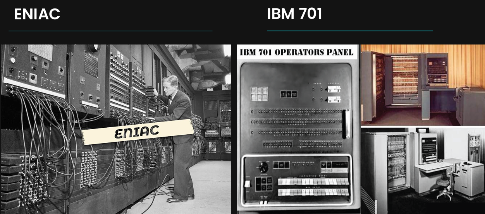
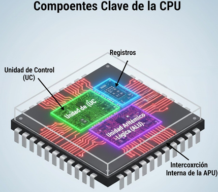
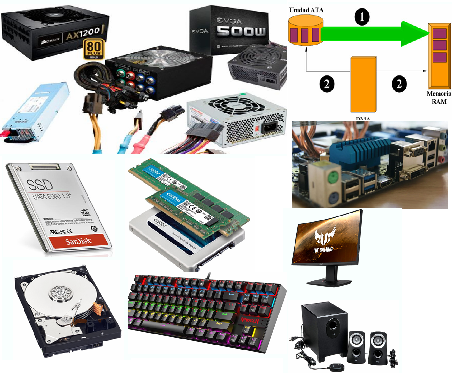
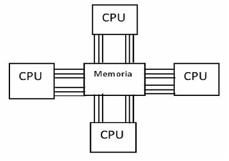
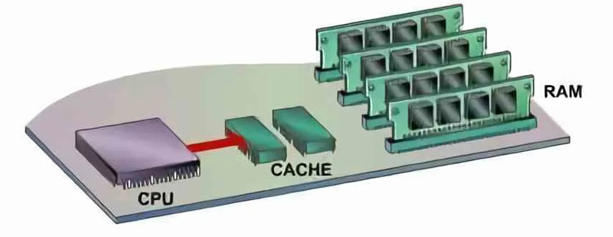

Unidad 1 — Arquitecturas de Cómputo
Modelos arquitectónicos, componentes del CPU, organización de memoria y buses del sistema.
¿Qué es una Arquitectura de Computadora?
Es el diseño conceptual y la estructura fundamental de un sistema de cómputo. Define cómo interactúan el hardware, la memoria, las instrucciones y los dispositivos de entrada/salida para ejecutar programas.
Modelos clásicos de arquitectura
-
Arquitectura Von Neumann: Un único bus para datos e instrucciones.
Ventajas: diseño simple y económico.
Desventaja: cuello de botella de Von Neumann. -
Arquitectura Harvard: Memoria separada para datos e instrucciones.
Ventaja: mayor paralelismo y velocidad.
Ejemplo: microcontroladores y DSP. - Arquitecturas modernas híbridas: Combina elementos de Von Neumann con cachés separadas tipo Harvard.
Arquitecturas Segmentadas (Pipeline)
Divide la ejecución de una instrucción en pasos (fetch, decode, execute, memory, writeback), permitiendo procesamiento en paralelo dentro de un mismo núcleo.
- Ventaja: aumenta el rendimiento sin aumentar frecuencia.
- Desventajas: riesgos estructurales, de datos y de control (branch misprediction).
Multiprocesamiento y Multicore
Implica usar dos o más procesadores o núcleos. Existen dos enfoques:
- SMP (Symmetric Multiprocessing): todos los procesadores comparten memoria.
- MPP (Massively Parallel Processing): cada procesador tiene memoria propia.
Componentes del CPU
- Unidad Aritmética Lógica (ALU): operaciones matemáticas y lógicas.
- Unidad de Control (CU): interpreta instrucciones y dirige señales internas.
- Registros internos: almacenamiento temporal ultrarrápido (PC, IR, AC, flags).
Memoria del sistema
La memoria se organiza en niveles según velocidad:
- Memoria Caché (L1, L2, L3): más rápida pero pequeña.
- Memoria RAM: almacena datos temporales durante la ejecución.
- Almacenamiento secundario: HDD, SSD.
Buses del Sistema
- Bus de datos: transporta información binaria.
- Bus de direcciones: identifica posiciones de memoria.
- Bus de control: señales de lectura, escritura e interrupciones.

Unidad 2 — Estructura y Funcionamiento del CPU
Ciclo de instrucción, señales de control, microarquitectura y manejo de interrupciones.
¿Qué es el CPU?
El CPU (Unidad Central de Procesamiento) es el cerebro de la computadora. Ejecuta instrucciones, procesa datos y coordina todos los componentes del sistema.
Componentes principales del CPU
- Unidad de Control (CU): dirige el flujo de datos, interpreta instrucciones y coordina señales internas.
- ALU (Unidad Aritmética Lógica): realiza operaciones aritméticas y lógicas.
-
Registros: memoria interna ultrarrápida.
Incluyen:
- PC: contador de programa
- IR: registro de instrucción
- MAR: registro de direcciones
- MDR: registro de datos
- Acumulador (ACC)
Ciclo de instrucción
Es el proceso que sigue el CPU para ejecutar cada instrucción. Consta de:
- Fetch: el CPU obtiene la instrucción de memoria.
- Decode: la instrucción se interpreta.
- Execute: se realiza la operación indicada.
- Write-back: resultados regresan a registros o memoria.
Modo usuario y modo kernel
- Modo Usuario: ejecución limitada, no tiene acceso directo a hardware.
- Modo Kernel (Supervisor): acceso total al sistema, usado por el SO.
Señales de Control
- Clock: marca el ritmo del CPU.
- Read/Write: indican si se lee o escribe en memoria.
- Interrupciones: permiten atender eventos externos.
Interrupciones
Permiten pausar la ejecución normal del CPU para atender un evento importante.
- Interrupciones de hardware: teclado, ratón, temporizador.
- Interrupciones de software (traps): llamadas al sistema.
Microarquitectura
Es la implementación interna del CPU. Define cómo se conectan los bloques internos, cuántos pipelines existen y cómo se manejan las instrucciones.
- Pipelines: ejecución segmentada.
- Unidad de predicción de saltos: reduce pérdidas por branch misprediction.
- Unidad de punto flotante (FPU): cálculos de alta precisión.
Memoria Caché
Reduce el tiempo de acceso a datos usados frecuentemente.
- L1: más rápida, más pequeña (por núcleo)
- L2: tamaño intermedio
- L3: compartida entre núcleos
Pipeline y paralelismo
- Paralelismo a nivel de instrucción (ILP): múltiples instrucciones simultáneas.
- Superescalar: varios pipelines ejecutando varias instrucciones por ciclo.
Manejo del reloj del sistema
La velocidad de un CPU depende del número de ciclos por segundo (Hz). Tiempos más altos significan más operaciones, pero también mayor consumo energético.

Unidad 3 — Selección de Componentes del Computador
Identificación, clasificación y evaluación de los componentes necesarios para integrar un equipo de cómputo.
1. Componentes principales de una computadora
Para ensamblar un equipo de cómputo funcional es necesario seleccionar correctamente cada uno de los elementos que intervienen en el procesamiento, almacenamiento y comunicación del sistema.
- CPU: Procesador encargado de la ejecución de instrucciones.
- Placa madre (Motherboard): Conecta y coordina todos los componentes.
- Memoria RAM: Almacenamiento temporal de datos en uso.
- Unidad de almacenamiento: HDD, SSD o NVMe para guardar información.
- Fuente de poder: Proporciona energía eléctrica a cada componente.
- Gabinete: Protege y organiza los componentes internos.
- Periféricos: Monitor, teclado, mouse, impresora, etc.
2. Selección del procesador (CPU)
Al elegir un procesador se consideran factores como la cantidad de núcleos, hilos, frecuencia, arquitectura, consumo energético (TDP) y compatibilidad con la tarjeta madre.
- Número de núcleos: más núcleos = mejor multitarea.
- Hilos (Threads): permiten ejecutar más procesos simultáneos.
- Frecuencia (GHz): determina la velocidad de procesamiento.
- Arquitectura: Intel o AMD, generación del procesador.
- Socket: debe coincidir con la tarjeta madre (AM4, LGA1700, etc.).
3. Selección de la tarjeta madre
La tarjeta madre determina el tipo de procesador, memoria y tarjetas de expansión que se pueden utilizar.
- Formato: ATX, Micro-ATX, Mini-ITX.
- Socket compatible: depende del CPU.
- Chipset: define características como overclock, número de puertos y líneas PCIe.
- Memoria soportada: tipo (DDR4, DDR5) y velocidad (MHz).
- Puertos y ranuras: PCIe, SATA, M.2, USB, Ethernet, audio.
4. Selección de memoria RAM
La RAM influye directamente en el rendimiento del sistema, especialmente en tareas multitarea y aplicaciones pesadas.
- Tipo: DDR3, DDR4, DDR5.
- Capacidad: 8 GB, 16 GB o más dependiendo del uso.
- Velocidad: medida en MHz; mayor velocidad = mejor desempeño.
- Latencias: afectan el tiempo de acceso.
5. Selección del almacenamiento
- HDD: económicos, grandes capacidades, lentos.
- SSD SATA: más rápidos que los HDD, buen punto medio.
- SSD NVMe: muy rápidos; ideales para equipos de alto rendimiento.
6. Selección de Fuente de Poder (PSU)
El suministro de energía es crítico para la estabilidad del sistema. Se debe considerar:
- Potencia (W): 450W–850W según componentes.
- Certificación: 80 Plus Bronze, Silver, Gold, Platinum.
- Modularidad: modular / semi modular / no modular.
7. Componentes periféricos
- Monitor: considera tamaño, resolución y frecuencia.
- Teclado: mecánico o de membrana.
- Mouse: DPI, ergonomía.
- Sistemas de sonido: bocinas, audífonos.
8. Ensamble del equipo
Implica montar físicamente los componentes dentro del gabinete y asegurarse de que estén conectados adecuadamente y con el flujo de aire correcto.
9. Compatibilidad de componentes
Antes de comprar es esencial verificar:
- Que la RAM sea compatible con la tarjeta madre.
- Que el CPU coincida con el socket y chipset.
- Que la fuente de poder tenga los conectores necesarios.
- Que el gabinete soporte el tamaño de la tarjeta madre.
10. Relación calidad–precio
Depende del propósito del equipo:
- Ofimática: componentes básicos, bajos costos.
- Gaming: GPU potente y buena refrigeración.
- Edición/Render: CPU multinúcleo, mucha RAM.
- Trabajo profesional: componentes de alta fiabilidad.

Unidad 4 — Hardware de Procesamiento
Procesadores, tipos de arquitecturas, paralelismo, GPUs, coprocesadores y sistemas embebidos.
1. ¿Qué es el hardware de procesamiento?
Se refiere a todos los dispositivos capaces de ejecutar instrucciones, realizar cálculos y manejar datos dentro de un sistema computacional. El componente principal es el procesador (CPU), pero también incluye:
- GPUs (procesadores gráficos)
- Coprocesadores matemáticos
- DSPs (procesadores digitales de señal)
- TPUs (procesadores de inteligencia artificial)
- Microcontroladores y procesadores embebidos
2. Tipos de procesadores
-
CISC (Complex Instruction Set Computer):
Instrucciones complejas que realizan varias operaciones en una sola instrucción.
Ejemplo: procesadores Intel x86. -
RISC (Reduced Instruction Set Computer):
Instrucciones simples y rápidas, ideales para pipelines profundos.
Ejemplo: ARM, RISC-V. - Procesadores híbridos: Combina características de CISC y RISC.
3. Paralelismo en los procesadores
El rendimiento moderno se basa en ejecutar múltiples tareas simultáneamente:
- Paralelismo a nivel de instrucción (ILP): pipelines, ejecución superescalar.
- Paralelismo a nivel de datos (DLP): SIMD (instrucciones vectoriales).
- Paralelismo a nivel de hilos (TLP): multicore, multithreading.
4. Unidades de procesamiento modernas
- CPU: optimizado para tareas secuenciales y de propósito general.
- GPU: miles de núcleos pequeños para ejecutar cálculos en paralelo. Ideal para gráficos, IA, simulaciones, minería, etc.
- TPU: diseñadas por Google para redes neuronales.
- FPGA: hardware programable para tareas específicas.
5. GPUs y cómputo masivamente paralelo
Las GPUs sobresalen en cálculos paralelos gracias a su arquitectura basada en miles de pequeños núcleos. Permiten acelerar enormemente:
- Procesamiento de imágenes
- Machine Learning
- Simulaciones físicas
- Renderizado 3D
6. Coprocesadores
Son procesadores dedicados a tareas específicas. Ejemplos:
- FPU: operaciones matemáticas de punto flotante.
- DSP: procesamiento de señales (audio, telecomunicaciones).
- NPUs: procesamiento neuronal en inteligencia artificial.
7. Procesadores multicore
En lugar de aumentar la frecuencia del reloj, los fabricantes agregan múltiples núcleos capaces de ejecutar instrucciones de manera independiente.
- 2–4 núcleos: equipos de oficina o uso básico.
- 6–8 núcleos: gaming y multitarea.
- 12–16 núcleos: edición, renderizado, estaciones de trabajo.
- 32+ núcleos: servidores y centros de datos.
8. Procesadores embebidos
Diseñados para una función específica dentro de un dispositivo electrónico.
- Electrodomésticos
- Sistemas automotrices
- Televisores inteligentes
- Relojes y dispositivos IoT
- Robots y drones
9. Refrigeración y manejo térmico
El procesador genera calor y necesita mecanismos de disipación:
- Disipador de aire: ventiladores.
- Refrigeración líquida: mejor rendimiento térmico.
- Pastas térmicas: facilitan la transferencia de calor.
10. Tendencias modernas
- Procesadores híbridos P-core + E-core (Intel Alder Lake).
- Crecimiento del cómputo basado en GPUs.
- Adopción de arquitecturas ARM en laptops y servidores.
- Aceleradores dedicados para IA.

Unidad 5 — Procesadores de Gama Baja, Media y Alta
Comparación de características, tecnologías, desempeño y aplicaciones según la gama del procesador.
1. Introducción
Los procesadores se clasifican en gamas según su potencia, características, consumo energético y precio. Las tres gamas principales son:
- Gama baja: baja potencia, excelente eficiencia y costo reducido.
- Gama media: equilibrio entre rendimiento y precio.
- Gama alta: máximo desempeño para tareas profesionales y gaming avanzado.
2. Procesadores de Gama Baja
Están diseñados para tareas básicas como navegación web, ofimática y uso escolar. Priorizan la eficiencia energética y bajo costo.
Características principales
- Pocos núcleos (2–4)
- Baja frecuencia base
- Gráficos integrados simples
- Bajo consumo energético (TDP 6–15W)
- Precios muy accesibles
Ejemplos comunes
- Intel Celeron N4020
- Intel Pentium Silver
- AMD Athlon 3000G
- AMD A6 / A4
Usos recomendados
- Computadoras económicas
- Navegación web
- Word, PowerPoint, Excel
- Reproducción de video
3. Procesadores de Gama Media
Ofrecen una mezcla equilibrada entre rendimiento, consumo y precio. Son los más usados en laptops y PCs modernas.
Características principales
- 4–8 núcleos
- Frecuencias superiores
- Buen rendimiento multitarea
- Gráficos integrados decentes
- TDP 15–65W
Ejemplos comunes
- Intel Core i3 12ª/13ª Gen
- Intel Core i5 10ª/11ª/12ª Gen
- AMD Ryzen 3 3200G / 5300G
- AMD Ryzen 5 3600 / 5600X
Usos recomendados
- Gaming ligero o medio
- Edición ligera de imágenes y video
- Multitarea
- Programación
4. Procesadores de Gama Alta
Destinados a tareas avanzadas que requieren la máxima potencia posible. Son ideales para gaming de alta gama, creación de contenido y cargas intensivas.
Características principales
- 8–24 núcleos o más
- Frecuencias turbo muy elevadas
- Capacidad de overclock
- Gran memoria caché L3
- Compatibilidad con RAM de alta velocidad
- TDP elevado (95W–250W)
Ejemplos comunes
- Intel Core i7 12700K / 13700K
- Intel Core i9 12900K / 13900K
- AMD Ryzen 7 5800X / 7700X
- AMD Ryzen 9 5900X / 7950X
- AMD Threadripper (altas cargas profesionales)
Usos recomendados
- Gaming AAA en alto / ultra
- Edición profesional de video 4K/8K
- Render 3D
- IA, ciencia de datos, simulación
- Streaming de alta calidad
5. Comparación entre gamas
| Gama | Núcleos | Frecuencia | TDP | Uso típico |
|---|---|---|---|---|
| Baja | 2–4 | Baja | 6–15W | Ofimática |
| Media | 4–8 | Media | 15–65W | Gaming ligero / trabajo medio |
| Alta | 8–24+ | Alta | 95–250W | Gaming profesional / cargas pesadas |
6. Conclusiones
La elección del procesador ideal depende completamente del tipo de usuario. Para tareas básicas, la gama baja es más que suficiente. Para un usuario promedio o gamer casual, la gama media ofrece el mejor equilibrio. En cambio, para profesionales que requieren potencia extrema, la gama alta es imprescindible.

Conclusiones
La arquitectura de computadoras combina diseño de hardware y técnicas de software para alcanzar el máximo rendimiento y la mejor eficiencia. La elección entre arquitecturas se basa en el problema, presupuesto y escalabilidad requerida por el ususario final, y varía dependiendo de éstas también. Las memorias y la organización interna del CPU (registros, caches, pipelines) son fundamentales para el rendimiento global y el conocimiento sobre éstos es vital para el Ingeniero en Sistemas Computacionales, así como para el artista es vital conocer sus lienzos y pinceles.
Referencias
Material de las presentaciones del curso (Unidades 1–5).